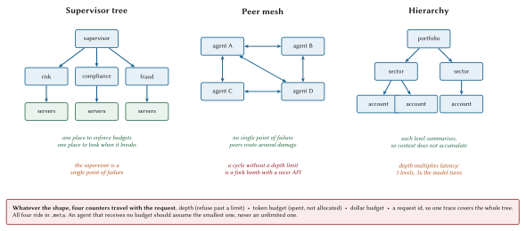

Multi-Agent Topologies
The line is usually quoted as mysticism. It is actually a debugging technique: the constraint you are struggling against is a category you invented. In multi-agent systems the invented category is “agent” as a special kind of thing. There is no agent. There is a host that also happens to be a server, and once you see that, the whole topic collapses into things you already know.
An agent is a host and a server at the same time
That is the entire architectural insight.
On its consumer side, it is a host: it connects to servers, merges catalogues, runs a loop.
On its provider side, it is a server: it exposes tools that happen to be implemented by running a loop.
Nothing in the protocol distinguishes “a tool that queries a database” from “a tool that runs a four-step agent loop and returns a synthesis”. The caller sees a tool call. This is a good property, and it is why MCP does not need a multi-agent extension.
agent = Server(name, "1.0.0", instructions=(
"Delegated credit analysis. Give it an account and a question; it will "
"consult the risk, fraud, and market-data servers and return a synthesis."
))
@agent.tool(
"analyse_account",
"Full credit analysis of one account: risk score, fraud signals, and "
"indicative pricing, synthesised into a recommendation.",
{
"type": "object",
"properties": {
"accountId": {"type": "string", "pattern": "^ACC-[0-9]{4}$"},
"question": {"type": "string",
"description": "What the caller wants to know"},
},
"required": ["accountId"],
},
)
def analyse_account(ctx: RequestContext):
budget = inherit_budget(ctx)
result = AgentLoop(inner_host, model,
max_steps=budget.steps,
token_budget=budget.tokens,
cost_budget_usd=budget.dollars).run(
f"Analyse {ctx.arguments['accountId']}. "
f"{ctx.arguments.get('question', '')}")
return text_result(result.answer,
structured={"iterations": len(result.iterations),
"costUsd": round(result.cost_usd, 6),
"depth": budget.depth})A tool whose implementation is a loop. The caller cannot tell, and mostly should not need to.
Three shapes

Supervisor tree
One coordinator, several specialists. The shape most teams reach for, and usually correctly.
Isolation: a specialist that fails, hangs, or misbehaves is contained by the supervisor. It can retry, route around, or report.
Failure mode: the supervisor is a single point of failure and, more insidiously, a single point of context. Every specialist’s summary lands in the supervisor’s window, which fills.
Peer mesh
Agents call each other directly. No coordinator.
Isolation: none, structurally. Peers route around damage, which is resilience of a different kind.
Failure mode: cycles. A calls B calls C calls A, and now you have an infinite recursion distributed across three machines with a token meter attached.
The depth limit below bounds how expensive that gets. It does not detect it, and the difference matters when somebody is paged. A cycle that hits the depth limit reports “delegation depth 3 exceeds the limit of 3”, which names a budget problem and sends whoever is on call to look at budgets. The actual problem is a loop in the call graph, and it is not visible from that message.
So carry the path as well as the depth:
def extend_path(ctx: RequestContext, name: str) -> list[str]:
"""Add this agent to the path, refusing if it is already on it.
A depth limit bounds how bad a cycle gets; it does not detect one. A mesh
where A calls B calls C calls A stops at depth 3 having done three useless
delegations and returned a budget error that names the wrong problem. The
path makes the actual cycle visible in the error message, which is the
difference between a five-minute diagnosis and an afternoon.
"""
path = call_path(ctx)
if name in path:
raise errors.InvalidParams(
"Delegation cycle: " + " -> ".join([*path, name]))
return [*path, name]The error now reads Delegation cycle: a -> b -> c -> a, which is a diagnosis rather than a symptom.
One deliberate property: a diamond is legal. If the supervisor delegates to two specialists and both call the same pricing agent, neither path contains a repeat, and both proceed. The check is on the path, not on the set of agents involved, because reaching one agent by two routes is a normal shape and only a loop is a bug.
Hierarchy
Levels, each summarising for the one above. Portfolio, sector, account.
Isolation: good, and the context property is the real prize: each level sees summaries, so the top-level window stays small regardless of how many accounts exist.
Failure mode: depth multiplies latency. Three levels means the leaf’s model turn, the middle’s model turn, and the top’s model turn, in series. A 1.4-second task becomes a four-second task.
The four counters
Whatever the shape, four things must travel with a delegated request, and all four ride in _meta.
DEPTH_KEY = "com.meridian/delegationDepth"
TOKENS_KEY = "com.meridian/tokenBudgetRemaining"
DOLLARS_KEY = "com.meridian/costBudgetRemaining"
# `traceparent` is already reserved by the spec for the fourth.
MAX_DELEGATION_DEPTH = 3
def inherit_budget(ctx: RequestContext) -> Budget:
"""Read the caller's remaining budget, or assume the smallest.
An agent that receives no budget must not assume an unlimited one. That
default is how a misconfigured caller turns into a four-figure invoice.
"""
meta = ctx.raw_meta
depth = int(meta.get(DEPTH_KEY, 0))
if depth >= MAX_DELEGATION_DEPTH:
raise errors.InvalidParams(
f"Delegation depth {depth} exceeds the limit of "
f"{MAX_DELEGATION_DEPTH}")
return Budget(
depth=depth + 1,
tokens=int(meta.get(TOKENS_KEY, DEFAULT_TOKEN_BUDGET)),
dollars=float(meta.get(DOLLARS_KEY, DEFAULT_COST_BUDGET)),
steps=max(1, MAX_STEPS - depth * 2),
)Four decisions in that function, each worth stating:
Depth is checked before any work. Refusing at depth 3 costs one request. Discovering the recursion at depth 30 costs thirty.
The default budget is small, not infinite. An agent that receives no budget is talking to a caller that has not thought about budgets, which is exactly when a conservative default matters most.
Steps shrink with depth. A leaf agent does not need eight iterations. If it does, the decomposition is wrong.
Budgets are remaining, not allocated. This is the one people get wrong. Passing “you may spend $0.50” to three children authorises $1.50. Passing what is left, and decrementing as results return, authorises $0.50 total.
Circuit breakers
Budgets stop runaway spending. Circuit breakers stop runaway waiting.
class CircuitBreaker:
"""Stop calling something that is clearly broken.
Three states. Closed: normal. Open: fail fast without calling. Half-open:
let exactly one probe through and decide from its outcome. The half-open
state is what stops a recovering service being flattened by every client
reconnecting at once.
"""
def __init__(self, *, threshold: int = 5, cooldown: float = 30.0):
self.threshold = threshold
self.cooldown = cooldown
self.failures = 0
self.opened_at: float | None = None
def allows(self, now: float | None = None) -> bool:
if self.opened_at is None:
return True
if now - self.opened_at >= self.cooldown:
self.opened_at = None # half-open: one probe gets through
self.failures = self.threshold - 1
return True
return False
def record(self, ok: bool, now: float | None = None) -> None:
if ok:
self.failures = 0
self.opened_at = None
else:
self.failures += 1
if self.failures >= self.threshold:
self.opened_at = nowFailing fast is better than timing out, for a reason specific to agent systems: a timeout consumes the caller’s step budget while producing no information. A fast failure lets the model try something else with the steps it has left.
Discovery at scale
Two servers you configure by hand. Two hundred you do not.
| Mechanism | Good for | Watch out for |
Static config (.mcp.json) |
Development, small fixed fleets | Drift between environments |
| The official MCP Registry | Public, discoverable servers | Anything public is untrusted (Chapter 19) |
| A private registry | Enterprise fleets, approval workflows | You now operate a registry |
| Runtime binding | Selecting a server per task from a catalogue | Discovery latency in the critical path |
Whatever you use, server/discover is cacheable with a TTL, so honour it. A supervisor rediscovering twelve servers per task is spending twelve round trips on information that changes when somebody deploys.
Tracing across the tree
This is where multi-agent systems become debuggable or do not.
One trace id, propagated through every hop, so a request that fans out to three agents and eleven servers is one trace with a shape you can read.
body["_meta"] = build_request_meta(
self.capabilities, self.info,
protocol_version=self.protocol_version,
progress_token=progress_token,
traceparent=traceparent,
)W3C trace context, in the reserved traceparent key. The specification carves out an explicit exception to the reverse-DNS prefix rule for exactly this, which tells you how important the working group considered it.
Without it, a slow request in a three-level hierarchy is eleven separate log searches and a guess. With it, it is one waterfall. Chapter 16 builds the waterfall.
Meridian’s supervisor
Three specialists, one coordinator, one traced request.
# sketch: illustrative wiring, not extracted from the repository
supervisor = Host(name="meridian-supervisor",
consent=ConsentPolicy(auto_allow_read_only=True),
tool_token_budget=3000)
supervisor.connect("risk", StreamableHttpClient(RISK_AGENT_URL))
supervisor.connect("compliance", StreamableHttpClient(COMPLIANCE_AGENT_URL))
supervisor.connect("fraud", StreamableHttpClient(FRAUD_AGENT_URL))
supervisor.discover_all()
supervisor.refresh_catalogue()
result = AgentLoop(supervisor, model,
max_steps=6,
token_budget=40_000,
cost_budget_usd=0.25,
parallel_fanout=True).run(
"Full review of ACC-1042 for the credit committee.")parallel_fanout=True is doing heavy lifting here. The three specialists are independent, so the supervisor should call them together. From Chapter 1, that is a 2.8× speedup on the tool-call band, and in a hierarchy each level’s fan-out compounds.
What the trace looks like
supervisor.analyse_portfolio [ 4,180 ms]
|- model turn (plan) [ 440 ms]
|- parallel fan-out [ 1,820 ms]
| |- risk-agent.analyse_account [ 1,820 ms]
| | |- model turn (plan) [ 430 ms]
| | |- risk.assess_account_risk [ 12 ms]
| | |- marketdata.price_facility [ 9 ms]
| | `- model turn (synthesise) [ 410 ms]
| |- fraud-agent.screen [ 890 ms]
| `- compliance-agent.review [ 1,240 ms]
`- model turn (synthesise) [ 470 ms]Read the shape first. The fan-out costs the maximum of its children (1,820) rather than the sum (3,950), which is what parallelism bought. And the leaf tool calls are 12 ms and 9 ms against model turns of 430 and 410, which is Chapter 1’s point restated at a different scale: you are paying for thinking, not for calling.
When not to build a multi-agent system
The section this chapter exists for.
Multi-agent architectures are intellectually appealing and expensive. Each delegation adds model turns, adds a failure mode, adds a trace to correlate, and adds a budget to enforce. Sometimes that is worth it. Often it is not.
| Delegate when | Do not when |
| The sub-task needs a genuinely different tool catalogue | You could have added three tools to one server |
| The sub-task needs different authorization, and the boundary is real | The boundary is organisational only |
| Sub-tasks are independent and parallel fan-out pays | They are sequential, so you pay depth for no concurrency |
| Context isolation is the point: the child sees data the parent must not | You are isolating context you could have summarised in one turn |
| Different teams own different agents and deploy independently | One team owns all of it |
The honest test: would this be a function call if the components were in one process? If yes, and you have made it an agent, you have added several hundred milliseconds and a distributed systems problem in exchange for an organisational boundary you could have drawn with a module.
Security across agent boundaries
Every boundary is a trust boundary, and delegation makes it easy to forget that.
Three rules:
Delegate authorization along with the work. The child should act with its own credentials, scoped to what it needs.
Never pass through a token. It was forbidden in Chapter 4 and it is still forbidden here. Chapter 4’s audience binding is the reason: the supervisor’s token names the supervisor as its audience, so a specialist presenting it downstream is presenting a token issued for somebody else, and a correctly implemented server will refuse it.
Which raises the obvious question the first two rules leave open. If the child needs credentials, and the parent must not lend it any, where do the child’s credentials come from?
Token exchange, or: how the child gets its own credentials
The mechanism is OAuth Token Exchange, RFC 8693, and it is worth knowing by name because it is the piece most delegated architectures are missing.
The idea is that an authorization server will trade one token for another, narrower one. The supervisor presents its own token, says which downstream resource the new token is for and which scopes it needs, and receives a token that speaks for the same user, names the specialist as the party acting, and can do strictly less.
POST /token HTTP/1.1
grant_type=urn:ietf:params:oauth:grant-type:token-exchange
&subject_token=<the supervisor's token>
&subject_token_type=urn:ietf:params:oauth:token-type:access_token
&resource=https%3A%2F%2Frisk-agent.meridian.example
&scope=risk:readThree properties make this the right answer rather than a ceremony.
The audience is correct. The returned token names the risk agent, so the risk agent accepts it and nothing else does. A leaked token from deep in the tree unlocks one leaf.
The scopes only narrow. A supervisor holding risk:read and risk:write can mint a child token with risk:read alone. The specialist that only reads cannot be talked into writing, whatever it is told by whatever text it just read.
The user is still the subject. The sub claim still names the human. Your audit log at the leaf records who this was ultimately for, and the act claim records which agent was acting, so the chain reconstructs without your having to log it separately at every hop.
That last property is what distinguishes token exchange from giving each agent a service account. Service accounts work, and they lose the user: every leaf log line says risk-agent-prod did it, and the question “what did this system do on Ade’s behalf” becomes unanswerable at exactly the moment somebody asks it in an incident review.
Audit the delegation, not just the leaves. An audit log showing assess_account_risk was called tells you nothing about who decided to call it. Record the chain.
And the one that people find surprising: an agent that consumes untrusted content and then calls another agent has extended the injection surface. If a compliance agent reads poisoned guidance text and then delegates to a risk agent, the injection now reaches a system with different privileges. Chapter 19 follows that thread to its conclusion.
What to remember
An agent is a host on one side and a server on the other. The protocol needs no extension for this.
Supervisor trees for isolation, peer meshes for resilience, hierarchies for context management. Pick for the property you need.
Four counters travel in
_meta: depth, token budget, cost budget, trace id.Check depth before doing work. Default to a small budget, never an unlimited one.
Budgets must be remaining-and-decrementing, not per-node allowances, or fan-out multiplies them.
Circuit breakers with a half-open probe, because a timeout burns the caller’s step budget and tells it nothing.
Propagate
traceparent, or a slow request becomes eleven log searches.Every delegation adds at least two model turns. Delegate for real reasons.
Delegate authorization along with work, never a token. RFC 8693 token exchange is how the child gets its own, narrower credentials while the user stays the subject.
Carry the call path, not only the depth, or a cycle reports itself as a budget problem.
That closes Part III. You can build all of it now. Part IV is about finding out whether it is any good.